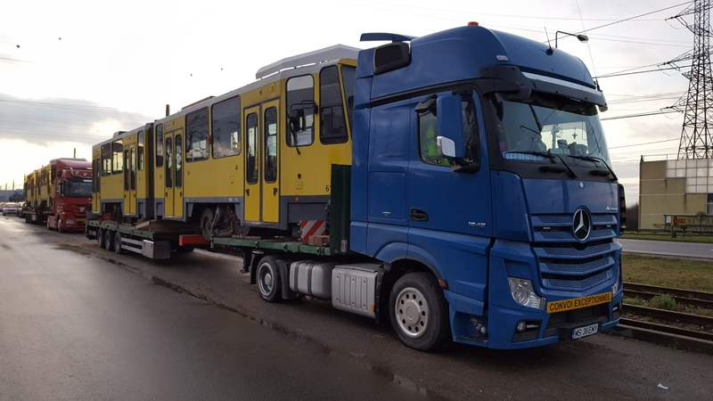
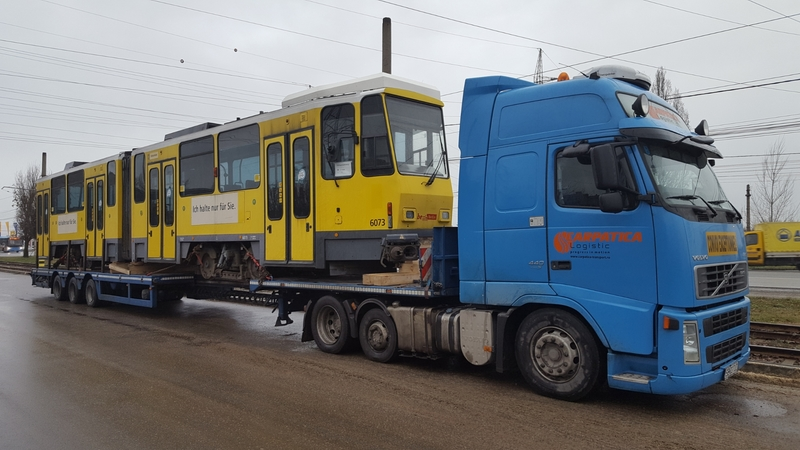
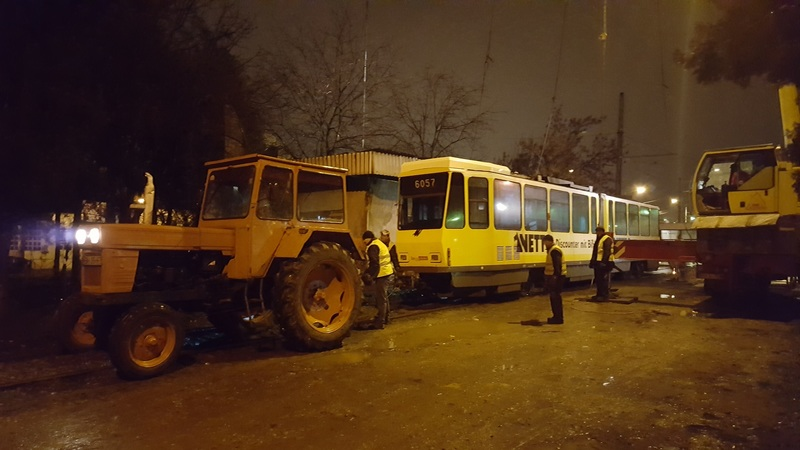
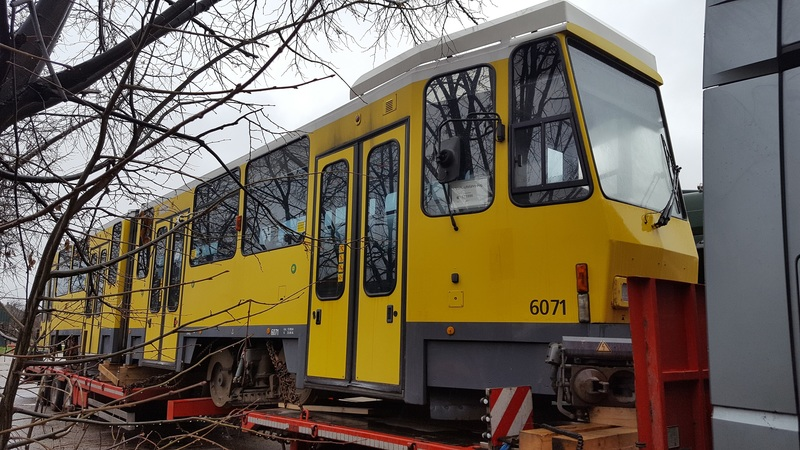
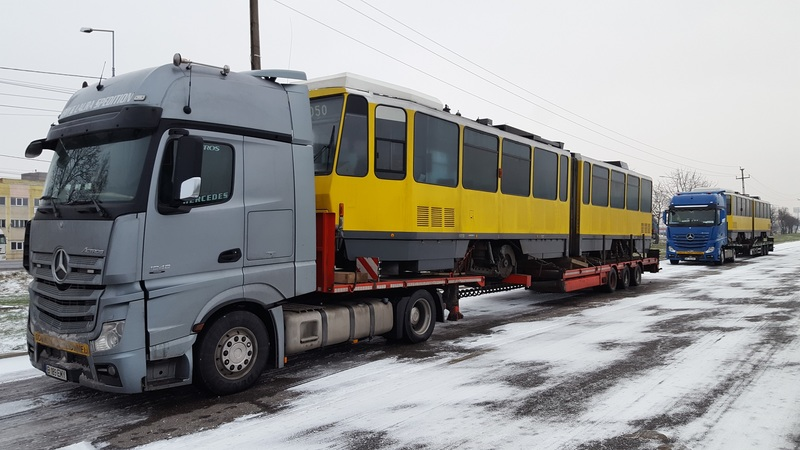
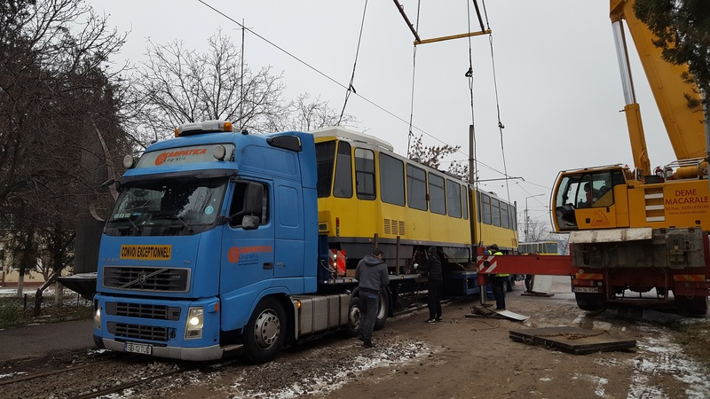
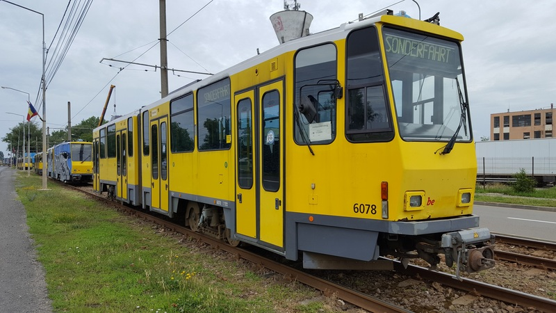

Sectiunea Tramvaie din Romania
O sectiune calitativa despre tramvaie din toate orasele Romaniei

O sectiune calitativa despre tramvaie din toate orasele Romaniei
Avându-se în vedere că s-a reluat circulaţia autovehiculelor pe Podul Dacia, de azi, 11 septembrie 2020, ora 13:00, tramvaiele vor circula pe toate liniile: 1R, 1N, 2, 3R, 3N, 4R, 4N şi 8, pe traseele normale. Vă mulţumim pentru că utilizaţi transportul public prin curse regulate.
Sursa: OTL S.A
UPTADE ORA 12:07: Tramvaiele au inceput sa circule, primul tramvai circuland pe pod fiind Astra Imperio-ul 301, circuland pe linia 3N.
Tramvaiele KT4DM fac parte din peisajul Oradean de la 1 ianuarie 2018, cand primul vagon (203) a iesit pe traseu. Dupa si restul de 9 vagoane din primul lot au intrat in circulatie la scurt timp dupa primul vagon. La mijlocul anului in care cele 10 garnituri au fost puse in uz alte 20 de tramvaie de aceelasi model au sosit. In acest articol va vom arata istoria acestor vagoane la Oradea.
Pe 14 decembrie 2017, dimineata in zori, sosesc primele 2 vagoane KT4DM, 6108 si 6072:
In aceeasi zi, dar mai spre dupa-amiaza, soseste la capatul liniei de la Sinteza si 6073:
In seara din ziua in care primele 3 vagoane au fost descarcate 6057 este tractat de T4D-ZR-ul 44 catre depou, ca si celelalte vagoane:
Pe 16 decembrie 2017 soseste si 6071 dar este descarcat cateva zile mai tarziu dupa ce camionul se defectase:
In noaptea de 24 decembrie 2017 sosesc vagoanele 6012, 6050 si 6055:
La cateva ore dupa cele 3 tramvaie au sosit si ultimele doua vagoane din lot adica 6064 si 6089:
Pe 22 decembrie 2017, la 8 zile de la sosirea in Oradea 203 (ex. BVG 6108) este prezentat publicului.
Pe 1 ianuarie 2018 203 (ex. BVG 6108) intra in uz.
227 (ex. BVG 6071) iese in circulatie pe 5 ianuarie 2018.
206 (ex. BVG 6073) iese in circulatie pe 10 ianuarie 2018.
207 (ex. BVG 6012), 224 (ex. BVG 6050), 215 (ex. BVG 6089), 218 (ex. BVG 6055) si 201 (ex. BVG 6057) sunt puse in circulatie pana in februarie.
202 (ex. BVG 6072) este pus in circulatie la inceputul lunii februarie 2018.
200 (ex. BVG 6064) intra in circulatie pe 11 februarie 2018, astfel tot lotul de 10 tramvaie este apt de circulatie.
Pe 24 mai 2018 6109, primul KT4DM din al doilea lot, soseste la Oradea. Totodata, pe 25 mai, 6036 ajunge si el in oras si e descarcat deodata cu 6109.
Pe 29 mai ajung alte 3 tramvaie in ordinea sosirii si descarcarii 6081, 6149 si 6056. Tramvaiele au fost duse in depou de tramvaiul T4D 12, intrucat 44 se defectase.
Pe 11 iunie 2018 sosesc si se descarca vagoanele KT4DM 6017, 6128, 6018, 6083 si 6051. Pe langa tramvaiul 44 si T4D-ul 14 a ajutat la remorcherea tramvaielor in depou.

Pe 25 iunie s-a descarcat si ultima serie de 5 vagoane KT4Dmod in ordinea: 6171, 6035, 6123, 6148 si 6048. Remorcarea lor s-a efectuat astfel: 44+6171, 14+6035, 44+6123, 14+6148 si 14+6048.
Pe 8 iunie 2018 204 (ex. BVG 6149) si 217 (ex. BVG 6081) ies pe traseu.
Pe 12 iunie 2018 226 (ex. BVG 6056) intra in uz.
205 (ex. BVG 6109) iese in circulatie pe 19 iunie 2018.
295 (ex. BVG 6051) iese in circulatie tot pe 19 iunie 2018.
212 (ex. BVG 6017) e pus in uz pe 27 iunie.
210 (ex. BVG 6083) si 211 (ex. BVG 6018) sunt puse in circulatie pe 28 iunie.
213 (ex. BVG 6128) intra in circulatie pe 2 iulie 2018.
219 (ex. BVG 6063) intra in circulatie pe 22 iulie 2018.
216 (ex. BVG 6106) intra in circulatie pe 23 iulie 2018.
214 (ex. BVG 6053) intra in circulatie pe 24 iulie 2018.
220 (ex. BVG 6105) intra in circulatie pe 25 iulie 2018.
221 (ex. BVG 6048) intra in circulatie pe 26 iulie 2018.
225 (ex. BVG 6148) intra in circulatie pe 10 august 2018.
222 (ex. BVG 6123) intra in circulatie pe 13 august 2018.
223 (ex. BVG 6035) intra in circulatie pe 20 august 2018.
228 (ex. BVG 6171) intra in circulatie pe 4 septembrie 2018.
229 (ex. BVG 6078) intra in circulatie pe 6 septembrie 2018, astfel toate cele 30 de tramvaie KT4DM sunt disponibile de serviciu.
Conform Asociatei Prietenii Tramvaiului Oradea de pe Facebook, ieri ar fi sosit al 6-lea tramvai Imperio. Vom reveni cu noi actualizari atunci cand acestea vor aparea.
UPTADE: conform OTL, a sosit al 6-lea tramvai Imperio în Oradea.
Conform unor surse apropiate, cel de al 6-lea tramvai Astra Imperio va sosi peste aproximativ 2 saptamani si va primi numarul de parc 306.

Ieri, 24.08.2020, al 5-lea tramvai Imperio a sosit in Oradea, fiind descarcat de pe trailer la Biserica Emanuel. Acesta va primi numarul de parc 305.

De la 1 august 2020, tramvaiul din Botosani nu mai functioneaza, fiind inlocuit de 9 autobuze Isuzu Citiport deoarece infrastructura mijlocului de transport era precara, in ultima perioada tramvaiul botosanean fiind implicat in mai multe accidente. Anul trecut s-a lansat o licitatie pentru 9 tramvaie noi de 18 metri, (pentru curiosi aici pagina cu licitatia si cu mai multe detalii) fiind depuse 2 oferte: Astra Vagoane Calatori Arad S.A. si de Durmazlar Turcia. Licitatia a fost insa anulata pe 28.11.2019, dupa ce, conform SEAP, "Au fost depuse numai oferte inacceptabile si/sau neconforme". Pe 8 iulie 2020, insa, licitatia pentru municipiile Ploiești, Brăila, Galați și Botoșani a fost reluata, conform Monitorul de Botosani. Conform Somax TV, "in cel mai optimist scenariu, în 2025, Botoșaniul ar putea avea și tramvaie noi". Lasand partea trista a tramvaiului de la Botosani, care au fost inceputurile acestui mijloc de transport si cum a schimbat orasul situat in nord-estul tarii noastre? Sa aflam.

Întocmire documentaţie pentru proiectul "Introducerea transportului în comun cu tramvaiul în municipiul Botoşani".
Demararea lucrărilor de investiţii. Se aduc primele vagoane de tramvai – 10 bucăţi tip V3A şi se depozitează în incinta Depoului de tramvaie.
Se definitivează tronsonul A de cale rulare de 11,6 Km în iunie şi în 06 septembrie se inaugurează primul tramvai. A circulat pe traseul 101 Mobilă – Luceafărul şi a fost o mare atracţie, în special pentru copii. Pe data de 06 septembrie 1991 prima garnitură de tramvai a circulat în Botoşani pe linia 101. Dotarea iniţială a societăţii nou înfiinţate a fost de 10 vagoane tip V3A-M fabricate la URAC Bucureşti. Prin punerea în funcţiune a celei de a doua linii, respectiv 102 în octombrie 1993 pe strada Primăverii, în lungime de 4,2 Km cale simplă, s-a asigurat transportul cu tramvaiul dintr-o zonă foarte populată în zona industrială a municipiului Botoşani.
Se întocmeşte documentaţia pentru tronsonul B de cale rulare pentru strada Primăverii – 4,2 Km cale simplă. Primul tramvai în circulaţie 05.11.1993. Între anii 1995 – 1997 societatea s-a dotat cu 6 vagoane tip V3A şi 6 vagoane tip TATRA T4D. Acestea au circulat până în anul 2001, când întreaga dotare a fost schimbată cu vagoane second-hand aduse din Germania printr-un program guvernamental finanţat de statul german. În anul 2002, numărul de vagoane aflate în circulaţie pe cele două linii de tramvai a fost de 26 buc. Modernizarea societăţii a continuat în anul 2011, când s-au achiziţionat 11 vagoane de la firma DVB Dresden din Germania.
Cale rulare- Calea de rulare este construită din dale prefabricate din beton cu dimensiunea 6 x 2 m şi are o lungime de 15,8 Km. Ecartamentul acesteia este ecartament de tip normal, respectiv 1435 mm. Şina pentru rulare este de tipul "Oţelul Roşu'' şi este încastrată în profilul Omega din dale cu ajutorul garniturilor din cauciuc, necesare pentru asigurarea elasticităţii infrastructurii. Poziţionarea dalelor este făcută pe mijlocul străzii, pe ambele sensuri de circulaţie, în vederea asigurării unui trafic fluent.
STU 2 x 1600 A- Staţia de tracţiune urbană STU 2 x 1600 A este situată în centrul energetic al reţelei de contact, pe care o alimentează cu curent continuu la tensiunea de 600 V. Aceasta este amplasată pe strada Ana Ipătescu nr. 1, în imediata apropiere a S.C. E.ON – S.A. – Sucursala Botoşani (Alimentarea cu energie electrică se face cu cabluri de curent continuu, amplasate subteran. Puntele de injecţie, în număr de cinci, sunt distribuite astfel : două pe străzile Primăverii şi trei pe strada Calea Naţională). Alimentarea staţiei de tracţiune se face la tensiunea de 20 KV din staţiile Botoşani şi E.ON S.A. Botoşani printr-un post de transformare.
Reţeaua de contact- Reţeaua de contact are o lungime de 15,8 Km şi este secţionată în cinci tronsoane, fiecare tronson de reţea este alimentat prin intermediul cablurilor de current continuu şi a centrelor de alimentare şi întoarcere. Aceasta este de tip rigid, iar suspensia firului de contact se realizează prin intermediul traverselor din sârmă de oţel, a consolelor din ţeavă, a armăturilor izolante şi a clemelor de prindere şi înnădire. Firul de cupru utilizat este de tipul TT-80, iar stâlpii pentru susţinerea reţelei sunt de tipul SF 4 – 11 şi SF 8 – 11.